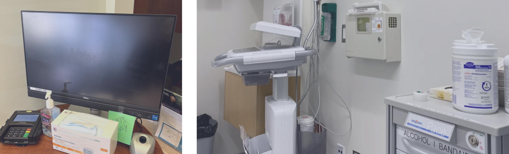
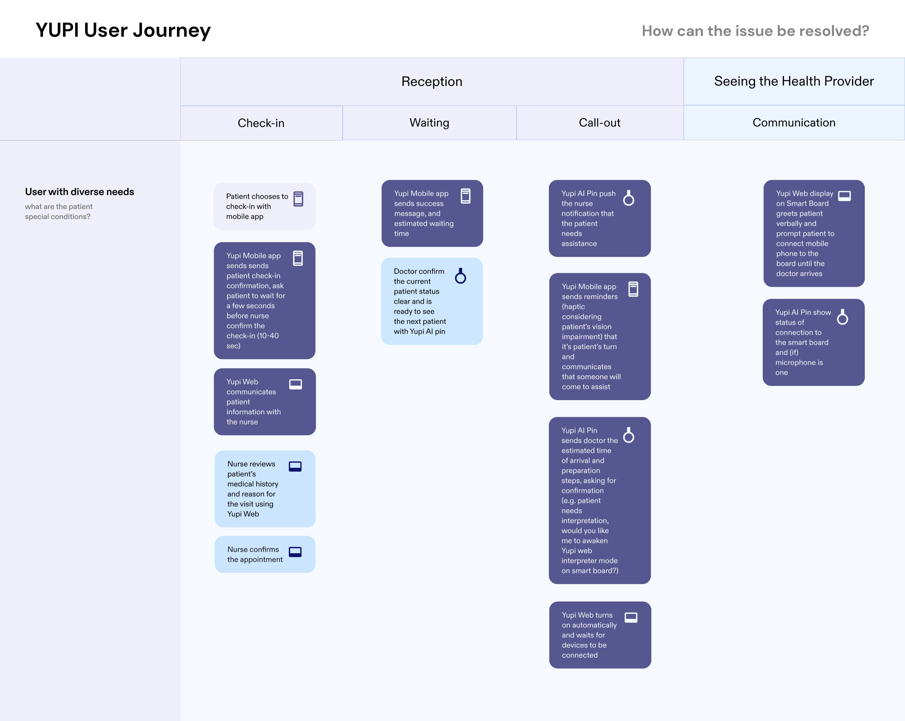
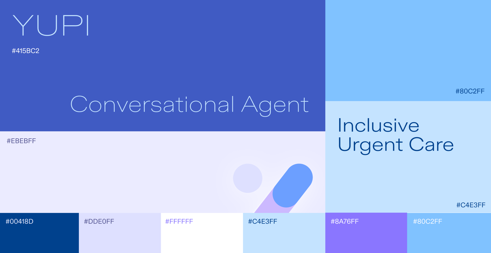
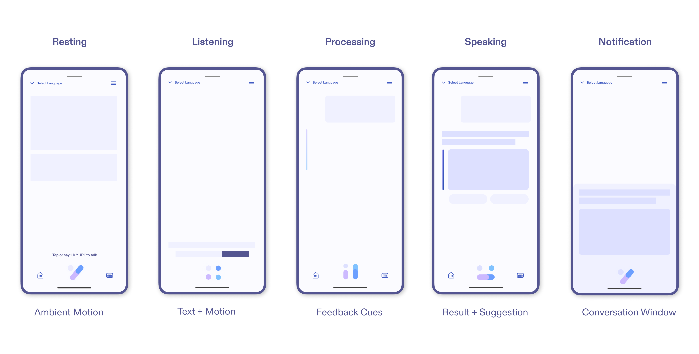
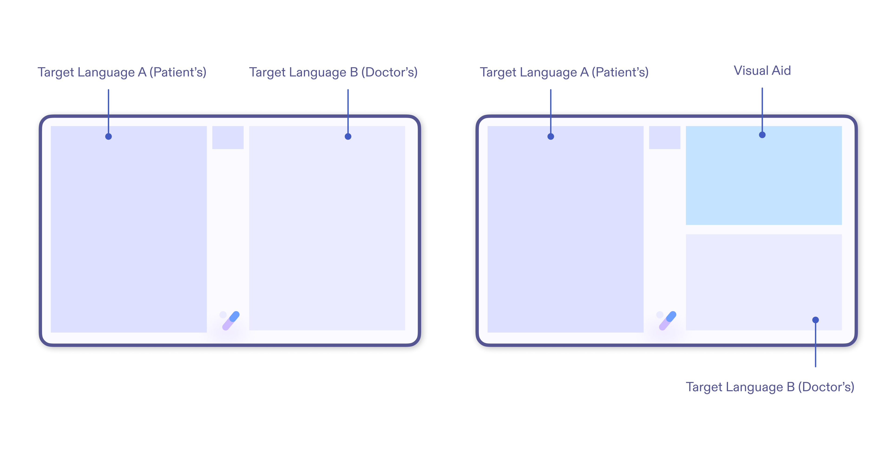
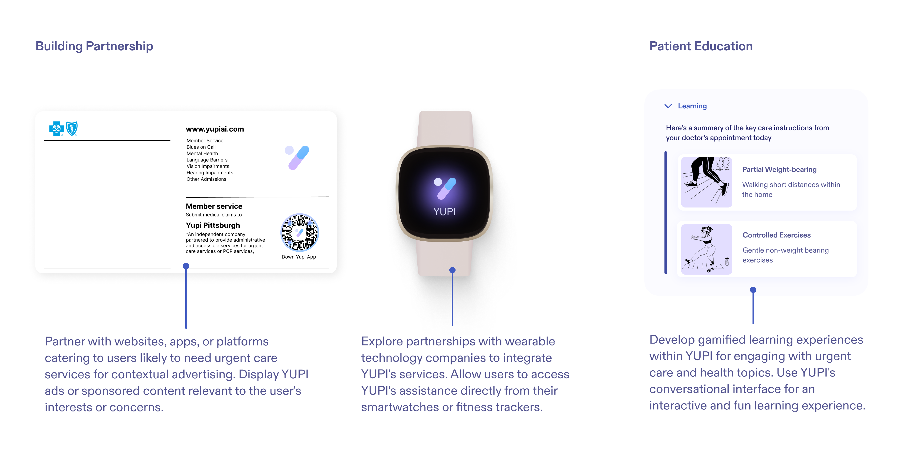

Table of Contents
2 Month (Spring 2024)
Concept Prototyping
Interaction Design
UI Design
Screamlining healthcare service for various stakeholders involved
Advisor: Auldyn Matthews, Sinan Goral
Team: Freya Young, Kevin Shang

OVERVIEW
A Smart AI Agent that communicates information
YUPI is an AI-powered platform that transforms healthcare communication, enhancing the urgent care experience for both patients and providers. YUPI's main objective is to improve accessibility and transparency in interactions between patients and doctors. It features real-time medical translation, 3D displays for illustrating medical conditions, and uses natural language processing to streamline appointment scheduling and communications. Its integrated system of smart pins, mobile apps, and exam room displays ensures that patients have continuous access to necessary information and support.
ROLE
Concept Development/Interaction Design
As part of a 3-person team, my role spans from ideation to design:
-
Ideation: Collaborated with the team to brainstorm innovative solutions for enhancing healthcare communication using AI, IoT, and smart materials. Conducted research on urgent care pain points and opportunities for improvement.
-
Concept Prototyping: Developed interactive prototypes showcasing YUPI's key features using Figma.
-
Interaction Design: Designed user flows for YUPI's various touchpoints, including smart pins, mobile apps, and exam room displays.
-
User Interface Design: Created visually appealing and inclusive UI designs for YUPI's interfaces, incorporating 3D displays, natural language processing, and accessibility features to cater to diverse user needs and abilities.
1. YUPI, Your Urgent-Care Personal Interface
YUPI is a conversational AI agent designated for urgent-care visits
who communicates key information to you in your language.
Appointments
YUPI helps user get information about nearby urgent-care and make appointments in their own mother language.

Timely Preparation
YUPI notifies the clinician about patient conditions in advance to assure in-time assistance that patient might need.

Check-in
YUPI helps the patient navigate the Urgent-Care environment by providing next steps and communicates wait time.

Interpretation
YUPI offers real-time interpretations to facilitate situations where the patient and the provider prefer different languages.

3D Visual Aids
YUPI board offers a 3D visual aid to facilitate the doctor when explaining the symptoms, prescription or treatment plan.

Follow-up
YUPI record key information during the visit that patient can refer to later on.

Concept Video
2. Why the Urgent Care
We were tasked to enhance accessibility in a public space, making these areas more inclusive and user-friendly for everyone, regardless of their abilities, by leverage new technologies including conversational agent and smart materials.
Auditing current experience
We visited the most popular urgent care clinics here at Pittsburgh including MinuteClinic at CVS, Concentra Urgent Care, Medexpress Urgent Care and UPMC Urgent Care.
Difficulty in navigating information
The clinicians were all very busy. We have to wait for a long time standing in line before talking to them to get more information about the treatment process.

Limited Support and Long Wait Time
As I stepped into the urgent care facility, I couldn't help but feel a sense of unease wash over me. The waiting room was bustling with activity, and the chairs looked like they had seen better days.
I settled into one of the uncomfortable chairs, trying to distract myself from the loud noise that seemed to emanate from every corner of the room. I couldn't help but notice the idle kiosk at UPMC Shadyside, which seemed to be the only clinic equipped with such technology.
As the minutes turned into hours, I found myself growing increasingly restless. The uncertainty of the wait was almost as uncomfortable as the chair I was sitting in. Finally, my name was called, and I was ushered into the doctor's office. But even then, there was no communication about how much longer I would have to wait before the doctor would actually see me.
When the clinician finally arrived. However, I quickly found myself struggling to understand the questions being asked. The medical jargon and technical terms were like another foreign language to me, and as someone who speaks English as a second language, it only added to my confusion and frustration.
Mapping Pain Points
We all recalled numerous moments of frustration going to Urgent Care that we experienced ourselves or heard from others. We mapped out these pain points to help us focus on the problems worth solving and technically feasible (Problem Space).


Speculating how conversational agent would improve the situations
Based on the insights form the pain point mapping, we could come up with the features that YUPI would help with and the modality with which patients and clinicians would interact with YUPI to use the features throughout the urgent care visit.
3. Ideation: From Masks to Robots to the ecosystem
Our design journey began with a smart mask to enhance patient-provider communication through translation and voice amplification. However, user feedback revealed accessibility issues, hygiene concerns, and political complications surrounding mask usage. These challenges prompted us to pivot.
Next, we explored robotics to revolutionize healthcare interactions. Autonomous robots could assist with navigation, information, and translation. Yet, high costs and the importance of human connection in healthcare, as emphasized by patients, led us to reconsider. Insights from user interviews brought to light this crucial aspect of healthcare: the human touch. One patient insightfully remarked, "It's comforting to talk to real humans, not robots, especially when you're worried about your health." This sentiment was echoed widely, reminding us that technology should enhance, not replace, the human elements of care.
The pivotal feedback shaped our final pivot to the YUPI ecosystem. Incorporating smart pins, mobile apps, and integrated clinic systems, YUPI ensures accessibility, hygiene, and the invaluable human touch at every interaction point. This journey underscores the importance of user-centered design in creating meaningful healthcare solutions.

4. Prototyping: Designing Interface for YUPI
Defining Identity

Typography and Color Palette
ABC Diatype, with its round edges, brings a contemporary and friendly feel to YUPI's design. The font's crisp and confident character ensures clarity and legibility, while its use throughout the interface creates a cohesive and conversational tone. The dominant use of ABC Diatype in logos, headers, and highlighted areas establishes a strong brand identity, reinforcing YUPI's commitment to providing a comfortable and engaging user experience.
Integrating YUPI to UI
CUI States

Mobile UI
Desktop UI

Smart Display UI
5. Reflection: YUPI beyond urgent care
Accessibility for All
YUPI‘s mission is to ensure everyone can navigate healthcare environments more autonomously. Looking into the future, YUPI Pin could be introduced with computer vision that interprets sign language.
To make YUPI a scalable, universally integrated solution within existing healthcare frameworks requires that YUPI can seamlessly interact with various healthcare systems, with unfortunately is a problem that has never been tackled in the past years despite countless attempts. That being said, the vision for YUPI is to create a healthcare environment where every patient, no matter their ability, feels understood, valued, and cared for, which we believe is achieveable given time and effort.

Marketing Strategies
When using "YUPI" in marketing materials, emphasize should be placed on key features, such as 24/7 availability, quick response times, and accurate information. It's crutial to also encourage natural language interaction, highlighting YUPI's ability to understand and respond to users effectively.
Takeaways
Designing Conversations
When creating conversations for YUPI, we had to consider linguistic nuances, cultural sensitivities, and technical accuracy, ensuring that YUPI could communicate effectively with users from diverse backgrounds. This highlighted the need to blend AI capabilities with human-like empathy to make healthcare information more approachable.
Presenting and Delivering Ideas
Through the development of YUPI, we learned valuable skills in presenting and advocating for our ideas like putting the demonstration up-front to build the context. The necessity to pitch our design to stakeholders, integrating their feedback, and iterating under tight deadlines taught us the importance of clarity and persuasion in communication and also the importance of software and soft skills.
Design for All Abilities
A central takeaway from working on YUPI was the importance of inclusivity in design. We were committed to ensuring that YUPI was accessible to individuals of all abilities, which led us to incorporate features like language translation, sign language recognition, and visual aids. This commitment deepened our understanding of accessibility issues and pushed us to innovate continuously, making sure that no user is left behind in the healthcare conversation.
Working with Our Team
Collaborating on YUPI has reinforced the value of a multi-disciplinary team. Despite similar background as international students, each member brought unique insights, resources and skillsets that enriched the project.

MORE PROJECTS
Bumble Vibely
The Vibely project transformed Bumble's user experience by introducing a map feature that facilitates connections through real-time, location-based interactions.

PETSPHERE
PetSphere is a pet community social web application that connects pet owners and pet service providers. I worked as a UI designer and front-end/back-end developer for the project.

BIKELINK PRO
A semi-autonomous e-bike with interfaces that employs human-centered design methodologies and principles of typography, color, and composition to set paradigms for interactions.